حضور رسمي ودبلوماسي
حظيت الفعالية بحضور رسمي ودبلوماسي واسع، تتقدّمه رعاية دولة رئيس مجلس الوزراء، وحضور نائبه السيد محمد علي تميم.
مَن حضر
أُرسلت الدعوات إلى الرئاسات والوزراء ورؤساء الهيئات والمحافظين والبعثات الدبلوماسية العربية والأجنبية، وفق قائمة البعثات المعتمدة لدى وزارة الخارجية.
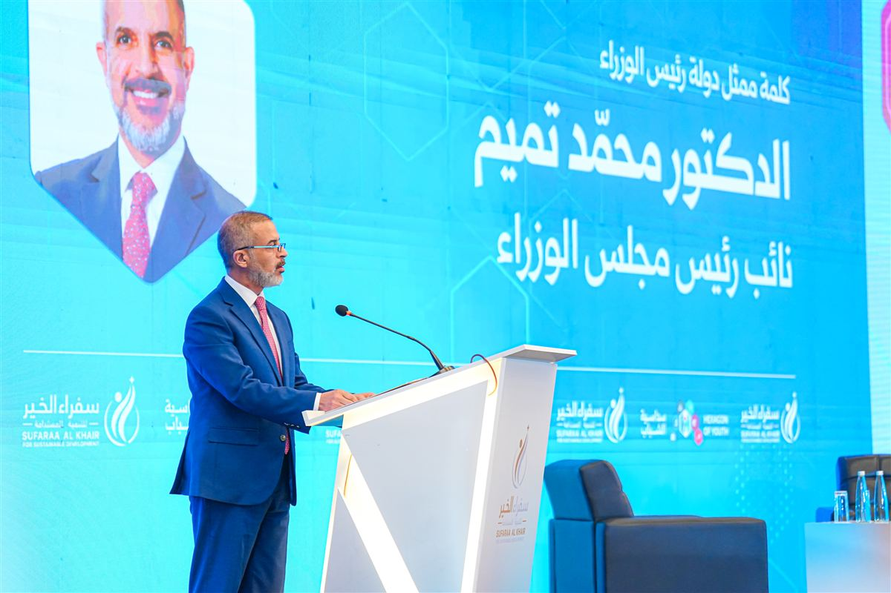
نائب رئيس مجلس الوزراء
السيد محمد علي تميم
افتتح الفعالية بكلمة نيابةً عن دولة رئيس مجلس الوزراء السيد علي فالح الزيدي، راعي الفعالية.
وزارة الاقتصاد الرقمي والحوكمة
معالي المهندس محمد صاحب الدراجي، الوزير
وزارة الاتصالات
معالي المهندس مصطفى سند، الوزير
- رئاسة الجمهورية (ممثّل عنها)
- مكتب رئيس مجلس الوزراء
- هيأة الإعلام والاتصالات
- مجلس شؤون المنافسة ومنع الاحتكار
- دائرة المنظمات غير الحكومية
أربع عشرة سفارة
حضر ممثلو ١٤ سفارة، وخُصّصت لهم منطقة جلوس دبلوماسية. اختر علماً لتعرف مَن مثّل بلده.
الجمهورية اللبنانية
السفير خليل عبد الله محمد

مؤسسات ومنظمات
إلى جانب الحضور الحكومي والدبلوماسي، شاركت نقابات واتحادات مهنية، ومراكز دراسات، ومنظمات مجتمع مدني، وجامعات، ورؤساء الشركات الراعية والشريكة.
وحضر رؤساء وممثلو الشركات الراعية والشريكة التسع عشرة والراعي الإعلامي.
شاركت مجموعات طلابية من الجامعات، منها كلية الآداب في جامعة بغداد، ووصلت قوائم جماعية من الجامعات إلى فريق التسجيل قبل الفعالية.
الرعاة والشركاء
نُفّذت الفعالية بدعم ٨ رعاة و١١ شريكاً وراعٍ إعلامي، وجاء تنفيذها برعاية رئيسية من فايبر إكس.
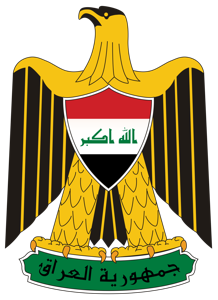
تحت رعايةدولة رئيس مجلس الوزراء
السيد علي فالح الزيدي
 الجهة المنظِّمة
الجهة المنظِّمةمؤسسة سفراء الخير
للتنمية المستدامة
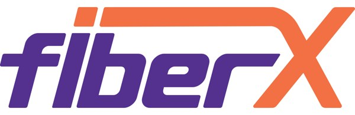
فايبر إكس FiberX
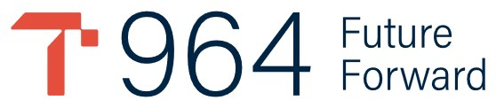
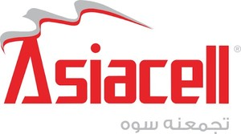
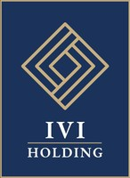
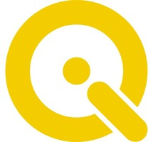
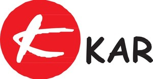
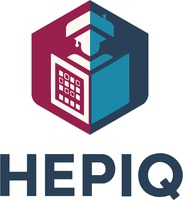
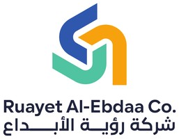
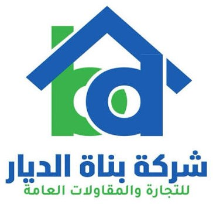
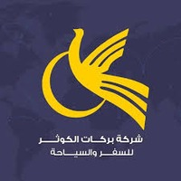
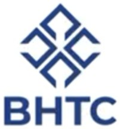
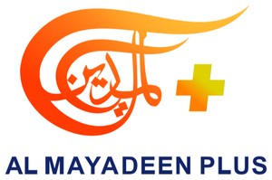
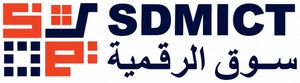
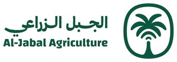
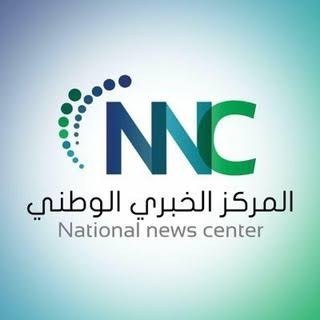
تشكر مؤسسة سفراء الخير للتنمية المستدامة كل راعٍ وشريك فتح باباً أمام الشباب في هذه الدورة.